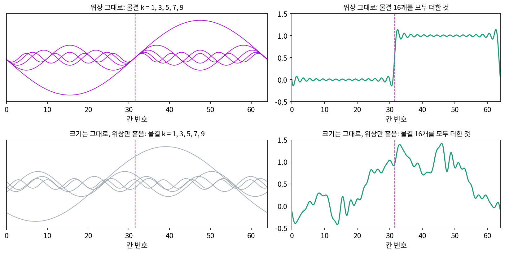
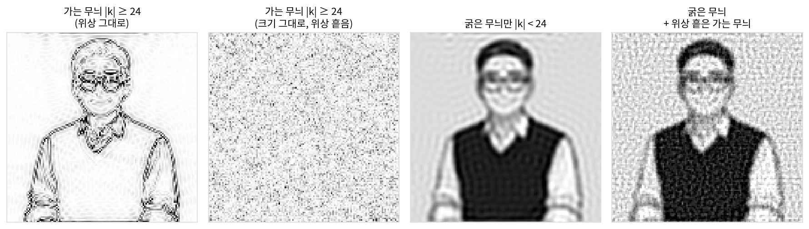
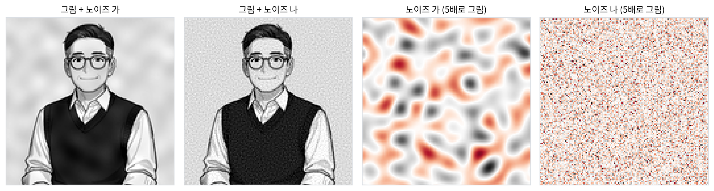

가장자리: 높은 주파수의 위상이 맞춰진 곳
크기를 모두 1로 두고 선생님 그림의 위상만 남겼을 때 나온 그림은 이상했다. 밝고 어두운 넓은 면은 사라지고, 안경테와 얼굴 윤곽과 조끼의 테두리만 선으로 남았다. 맞바꾼 그림에서 위상을 준 사람을 알아보게 한 것도 그런 윤곽이었는데, 왜 위상에는 윤곽이 들어 있을까? 그리고 가는 무늬의 크기, 곧 「가는 물결이 얼마나 센가」만 알면 윤곽을 그릴 수 있을까?
역사: 마흐 띠와 국소 에너지
19세기 물리학자 마흐(Ernst Mach)는 밝기가 서서히 바뀌다 꺾이는 자리에 실제로는 없는 밝은 띠와 어두운 띠가 보이는 착시를 보고했다. 이 「마흐 띠」처럼 사람 눈은 밝기가 바뀌는 자리에서 무언가를 보지만, 밝기가 바뀌는 모양은 여러 가지다. 한쪽이 밝고 한쪽이 어두운 계단, 가는 밝은 선, 지붕처럼 올라갔다 내려가는 꺾임. 1980년대 시각 연구자들은 이 여러 모양을 한 원리로 설명할 방법을 찾았다.
시각 과학자 모로네(M. Concetta Morrone)와 오언스(Robyn A. Owens)는 1987년 『패턴 인식 레터스(Pattern Recognition Letters)』에 「국소 에너지에서 특징 찾기」를 실었다. 그들은 계단·선·그림자 같은 특징을 밝기의 그래디언트가 아니라 물결들의 위상으로 정의했다. 그림을 이루는 물결들의 위상이 가장 잘 맞는 자리가 특징이 있는 자리이고, 그 특징 자리를 그림과 그 그림의 짝(물결마다 위상을 90° 돌린 그림)으로 만든 「국소 에너지」의 봉우리로 찾을 수 있다는 것이다. 이듬해 모로네와 버(David Burr)는 같은 생각을 사람의 시각 모델로 다듬었다. 위상을 90° 다르게 한 필터 두 벌의 반응으로 국소 에너지를 만들면, 사람이 선과 가장자리를 보는 자리를 그 봉우리가 맞힌다는 것이다. 1989년에는 로스(John Ross)와 함께 이 모델로 마흐 띠가 보이는 조건까지 설명했다.
계단 하나를 물결로 쪼개면
칸 0~31은 밝기 0, 칸 32~63은 밝기 1인 64칸짜리 신호를 만든다. 칸 31과 32 사이에 계단(가장자리) 하나가 있다. DFT 를 하면 평균(0.5) 말고는 홀수 주파수 k = 1, 3, 5, …, 31의 물결 16개만 남고, 크기는 0.3184, 0.1065, 0.0643, 0.0464, …로 대략 1/(πk)이다. 이 물결들을 계단 자리(칸 31.5)에서 보면 위상이 모두 −90°여서, 16개가 모두 같은 각도로 0을 지나며 올라간다. 평평한 곳인 칸 16에서는 −177.2°, 8.4°, −165.9°, 19.7°, …로 제각각이다.

크기는 그대로 두고 위상만 무작위 각도로 흩으면 어떻게 될지 보려고, 흩는 정도(무작위 각도에 곱하는 수)를 0에서 1까지 늘리며 쟀다.
| 흩는 정도 | 이웃 칸 사이 가장 큰 차이 | 값의 폭 | 제곱합 |
|---|---|---|---|
| 0 (원래 위상) | 1.0000 | 1.0000 | 32.0000 |
| 0.25 | 0.9180 | 1.5105 | 32.0000 |
| 0.5 | 0.7026 | 1.8382 | 32.0000 |
| 1 | 0.4291 | 1.8436 | 32.0000 |
제곱합은 네 경우 모두 32.0000 이다. 물결마다 크기를 바꾸지 않았으니 물결마다의 세기도, 그 합인 제곱합도 바뀌지 않는다. 그런데 0에서 1로 한 칸 만에 뛰던 계단은 사라지고, 값의 폭이 1.84나 되는 울퉁불퉁한 언덕이 남았다. 가장 가파른 곳도 0.43으로, 계단의 절반에 못 미친다. 가장자리는 가는 물결이 「있어서」 생기는 것이 아니라, 가는 물결들이 한 자리에서 「같은 각도로 만나서」 생긴다.
같은 자리에서 물결들의 위상이 얼마나 맞는지를 숫자 하나로 잴 수 있다. 칸 x에서 양의 주파수 물결을 화살표로 이어 붙인 길이를, 화살표 길이를 모두 더한 값으로 나눈다.
화살표들이 모두 같은 쪽을 가리키면 이어 붙인 길이가 길이의 합과 같아져 1이 되고, 제각각이면 서로 지워져 작아진다. 이렇게 잰 값을 위상 일치 (물결들의 위상이 한 자리에서 맞는 정도 / phase congruency)의 정도라 한다. 계단에서 칸 31.5의 위상 일치도는 1.0000이고, 평평한 칸 16은 0.3156이다(계단 바로 옆의 칸 31과 32는 0.9168). 모로네와 오언스가 말한 「위상이 가장 잘 맞는 자리」가 우리 눈이 가장자리라고 부르는 자리다.

그림에서도 같다. 선생님 그림의 |k| ≥ 24 인 가는 무늬에는 세기의 6.37%밖에 없지만, 위상을 그대로 둔 가는 무늬의 크기는 원래 그림의 밝기 그래디언트(이웃 칸 차이) 크기와 상관계수 0.5891로 겹친다. 윤곽선 그림이다. 크기는 그대로 두고 위상만 흩으면 상관계수가 −0.0008, 모래알 같은 노이즈다. 흩은 가는 무늬를 굵은 무늬에 더하면 원래 그림과의 닮음이 굵은 무늬만일 때의 0.9676보다 오히려 낮은 0.9365가 된다. 위상이 틀린 가는 물결은 윤곽을 되살리지 못하고 노이즈만 보탠다.
ML에서: 사람에게는 안 보이는 가는 노이즈
분류기를 속이려고 일부러 만든 옅은 얼룩(적대적 섭동)이나 흔한 노이즈는 주로 어느 주파수에 있을까? 2019년 인(Dong Yin)과 동료들은 「컴퓨터 비전 모델의 강건함을 푸리에로 보기」에서 그림 손상을 주파수별로 나눠 보았다. 가우시안 노이즈를 섞어 학습하거나 적대적 학습을 하면 가는 무늬 쪽 손상에는 강해지지만, 굵은 무늬 쪽 손상에는 오히려 약해진다는 것이 그들의 결과였다. 한쪽 주파수를 막으면 다른 쪽이 열린다. 가는 무늬 쪽 노이즈가 사람 눈에 왜 잘 띄지 않는지, 그런데도 모델에게는 왜 크게 들리는지는 아래 문제 9에서 숫자로 본다.
문제 7. 열 사람의 손뼉
열 사람이 모두 1초에 한 번씩 손뼉을 친다. 손뼉 소리의 세기를 1초에 한 바퀴 도는 물결로 보면, 사람마다 물결의 크기는 1로 같고 치기 시작한 순간(위상)만 다르다. (가) 열 사람의 위상이 모두 같으면 합친 물결의 크기는 얼마인가? (나) 위상이 제멋대로이면 합친 물결의 크기는 대략 얼마인가? 무작위 위상을 10만 번 뽑아 보면 합의 크기가 8 을 넘는 경우는 얼마나 되는가? (다) 백 사람이면 (가)와 (나)는 어떻게 되는가?

(가)는 다 같은 방향 화살표니까 10 이요. (나)는 제멋대로면 서로 지워지니까 0 이요.

화살표 열 개를 아무렇게나 이어 붙이면 정확히 출발점으로 돌아올까요?

그렇진 않겠네요. 씨앗을 고정해서 한 번 뽑아 보니 3.4048 이에요.
한 번은 운일 수 있어요. 여러 번 뽑아 보면요?
10만 번 뽑으면 크기 제곱의 평균이 10 이라서 제곱평균제곱근이 3.1621, √10 이랑 거의 같아요. 8 을 넘는 경우는 0.063%예요.

화살표가 서로 관계없으면 길이 제곱이 더해지니까 √10 이 맞아.
(다)처럼 백 사람이면요?
맞으면 100, 제멋대로면 √100 = 10 이에요. 스크립트로도 10.02 고요.

열 사람일 때보다 둘 사이가 더 벌어졌네?

응. 사람이 많을수록 맞췄을 때와 안 맞췄을 때의 차이가 √사람 수 배로 벌어져.

계단에서 물결 16개의 위상이 칸 31.5에서 모두 맞아 한 칸 만에 1 을 뛰던 것과 같은 거네요. 위상을 흩으니 가장 큰 뜀이 0.43으로 줄었던 것도요.

공연 끝나고 박수가 어느 순간 딱딱 맞기 시작하면 갑자기 소리가 커지는 게 그거였네요.
문제 8. 맞춘 각도가 바꾸는 모양
물결 k = 1, 3, 5, …, 15 여덟 개를 128칸 위에서 더한다. 크기는 1/k 이고, 칸 0 에서 모든 물결의 위상을 같은 각도 φ 로 맞춘다(신호는 Σ (1/k) cos(2πkx/128 − φ)). (가) φ = 0° 이면 칸 0 둘레는 어떤 모양인가? 칸 0 의 값은? (나) φ = 90° 이면? (다) φ = 45° 이면? 위상 일치도는 세 경우 모두 칸 0 에서 1 이다. 위상 일치도만으로 가장자리를 찾으면 무엇을 놓치는가? (위젯 3의 「문제 8 불러오기」는 φ = 45° 를 연다. 각도를 바꿔 가며 확인해 보자.)
위상 일치도가 셋 다 1 이면 셋 다 가장자리, 그러니까 계단이겠죠.
(가)를 칸 0 에 넣어 볼까요? cos 0 이 몇이죠?

다 1 이니까 1 + 1/3 + … + 1/15 = 2.0218 이에요. 칸 0 이 가장 크고 양옆으로 내려가요. 계단이 아니라 뾰족한 봉우리, 밝은 선 하나네요.
(나)는 cos(… − 90°) = sin 이니까 칸 0 에서 다 0 이야. 어, 값은 0 인데 칸 1 과 칸 −1 의 차이가 0.7591 로 가파르게 올라가.
그럼 이번엔 계단이야?
응. 홀수 사인을 1/k 로 더하면 네모 물결이 되니까 칸 0 과 칸 64 에 계단이 있어.

원래의 64칸 계단에서 칸 31.5의 위상이 몇 도였는지 기억나요?
−90°였어요! 사인으로 올라가는 계단. 0° 면 코사인이 모두 꼭대기에서 만나는 선이고, 90° 쯤이면 모두 0 을 지나는 계단이에요. 맞추는 것은 같고 맞춘 각도가 모양을 정해요.
(다)는 위젯에서 보니 칸 0 의 값이 1.4296, 칸 0 둘레 차이가 0.5367 이에요. 봉우리도 아니고 계단도 아니고 반쯤 섞인, 한쪽으로 기운 봉우리요.
그럼 위상 일치도로 가장자리를 찾으면요?
위상 일치도는 「맞았나」만 재고 「몇 도에서 맞았나」는 버려요. 그래서 선도 계단도 똑같이 1 로 잡혀요. 가장자리만 찾고 싶으면 맞춘 각도도 함께 봐야 해요.
크기만 보고 그림을 모르던 것과 비슷해요. 여기서도 「얼마나」만 남기고 각도를 버리면 종류를 잃네요.
문제 9. 같은 크기의 두 노이즈
선생님 그림에 칸마다 제곱평균제곱근 0.03 인 노이즈를 더한다. 노이즈 가는 |k| < 8 인 굵은 무늬로만, 노이즈 나는 |k| ≥ 32 인 가는 무늬로만 만들었다(위상은 무작위, 씨앗 고정). 아래 그림의 오른쪽 둘은 노이즈만 5배로 그린 것이다. (가) 두 노이즈의 이웃 칸 차이(그래디언트)의 제곱평균제곱근은 각각 얼마인가? 원래 그림의 그래디언트와 비교하라. (나) 그림을 멀리서 보는 것처럼 폭 2칸 가우시안 스무딩으로 흐리면 두 노이즈는 각각 얼마나 남는가? (다) 윤곽을 찾는 첫 층 합성곱 커널을 가진 모델과 사람 눈 가운데 누가 어느 노이즈에 더 흔들리겠는가? 가우시안 노이즈 증강이 가는 무늬 쪽 손상에는 강하게, 굵은 무늬 쪽 손상에는 약하게 만든다는 보고와 이어 말하라.

칸마다 크기가 0.03 으로 같으니까 그래디언트도 비슷하겠죠.
노이즈 나는 몇 칸마다 출렁이죠?
|k| ≥ 32 니까 4칸보다 짧은 간격이요. 이웃 칸끼리 값이 크게 다르겠네요.
재 보면 얼마나 다르죠?
재 보니 노이즈 가의 그래디언트는 0.0083, 나는 0.0316 이에요. 네 배 가까이요. 원래 그림의 그래디언트가 0.1160 이니까 나는 원래 윤곽의 4분의 1 넘게 흔드는 거예요.
(나)는 반대야. 흐리면 가는 무늬가 지워지니까 노이즈 나는 0.0000 으로 사라지고, 노이즈 가는 0.0258 로 거의 그대로 남아. 왼쪽 두 그림을 보면 가는 얼굴에 얼룩이 보이고, 나는 거의 원래 그림 같아.
그럼 (다)는요? 첫 층 커널이 무엇을 재는지 떠올려 보세요.
첫 층 커널은 이웃 칸 차이, 그러니까 가는 무늬 쪽에서 방향 있는 출렁임을 재요.
그럼 모델은 노이즈 나에 크게 흔들리겠네. 그래디언트를 네 배나 흔드니까.
응. 사람은 거꾸로야. 멀리서 보면 사라지는 노이즈라 나는 잘 못 알아채고, 노이즈 가에 흔들려.
가우시안 노이즈 증강을 하면 학습 그림마다 가는 무늬에 노이즈가 깔리니까, 모델은 가는 무늬를 덜 믿게 되겠네요. 그러면 노이즈 나에는 강해지는데, 그 대신 굵은 무늬에 더 기대니까 노이즈 가 같은 손상에는 약해지고요.
맞아요. 한쪽 주파수를 막으면 모델은 다른 쪽에 기대게 돼요. 그럼 위상의 말로는요? 노이즈 나는 위상이 무작위였어요.
가장자리는 가는 물결의 위상이 맞는 자리였잖아요. 무작위 위상의 가는 노이즈를 더하면… 윤곽 자리마다 그 맞음이 조금씩 흐트러지겠네요.
그 흐트러짐에 누가 더 예민할까요?
가는 무늬 하나하나의 세기에 기대는 모델이요! 사람은 굵은 무늬와 맞은 위상으로 얼굴을 보니까 괜찮고요.

문제 7(열 사람의 손뼉)에서 한두 사람만 박자를 놓쳐도 박수 소리가 확 흐려지던 것과 같은 원리네요. 손뼉의 박자가 물결의 위상이고요.